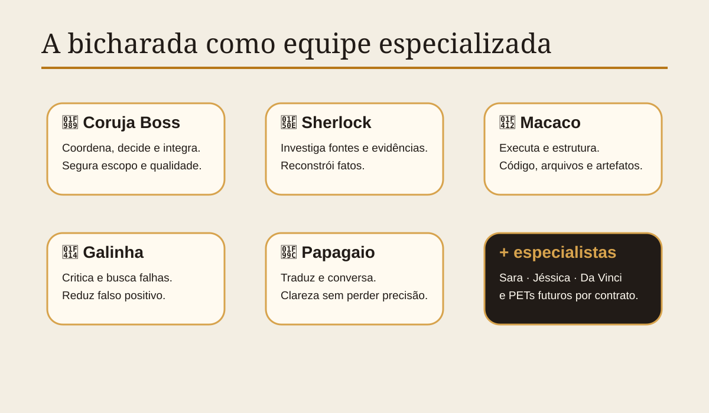
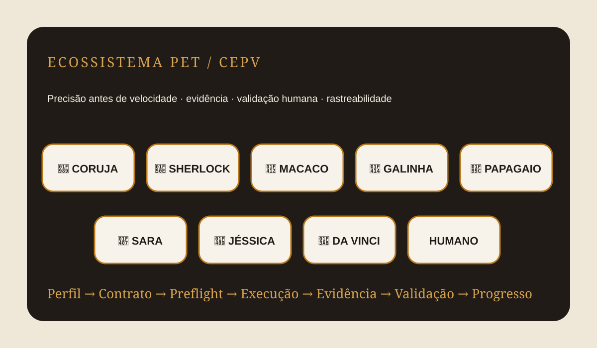

🔎
INVESTIGAÇÃOFonte antes da afirmação
Sherlock rastreia documentos, fontes primárias e cadeia de evidência.
Uma metodologia para coordenar especialistas, executar com contratos claros, registrar evidências e validar resultados com decisão humana.

Precisão antes de velocidade. Hipótese não vira fato. Evidência não vira memória sem validação.
Sherlock rastreia documentos, fontes primárias e cadeia de evidência.
Galinha procura erro, viés, exagero, falso positivo e hipótese alternativa.
Macaco estrutura, implementa, organiza e transforma evidência em artefato verificável.
O motor organiza o trabalho; a IA, quando existir, será apenas um componente do fluxo.
Especialidade, limites, escopo e responsabilidade de cada PET.
Define entrada, saída esperada, regras, ferramentas e condições de falha.
Objetivo, fonte, destino, permissão, risco, versão e sobrescrita antes da ação.
O PET adequado executa sua função real; sem personagem decorativo.
Resultados são acompanhados por fonte, logs, artefatos, hashes ou verificações.
CONFIRMADO, INFERÊNCIA ou NÃO DETERMINADO. Sem preencher lacunas por vontade.
Somente aprendizado validado é promovido; conflito gera revisão, não sobrescrita silenciosa.
O sistema informa, organiza e verifica. A decisão final permanece humana.
O motor não é a IA. O motor decide como o trabalho deve acontecer, quando uma etapa pode continuar e o que precisa ser comprovado antes.
Cada PET possui uma função operacional; a Coruja escolhe apenas os necessários para cada missão.

Preflight, seleção de PETs, integração, governança e controle de qualidade.
Decide quem entra e quando parar.Fontes primárias, OSINT, documentos, evidência e reconstrução factual.
Encontra o que sustenta ou derruba a hipótese.Código, edição, organização, arquivos, estruturação e implementação.
Transforma decisão em artefato verificável.Contraditório, vieses, erros, falso positivo e teste de refutação.
Tenta quebrar antes que a realidade quebre.Conversa, tradução, linguagem clara, acolhimento e adaptação de mensagem.
Faz a informação chegar do outro lado.Relações, contexto psicossocial, consequências humanas e cuidado.
Pergunta o que muda para as pessoas.Saúde, medicamentos, riscos e diferenciais técnicos, sem substituir profissional.
Cuida do limite técnico e do risco.Design, imagem, vídeo, linguagem visual e comunicação estética.
Transforma método em experiência compreensível.Casos, checkpoints, versões e artefatos formam a trilha de evidência do projeto.
Preservação do estado verificável e dos artefatos de auditoria.
Separação entre gate existente na baseline e condição experimental do harness.
26/26 testes-alvo e pacote preservado com checksum; sem promoção para LIVE.
Autoridade, assinaturas, revogação, registro confiável e operação real ainda exigem decisão.
Primeiro MVP: índice visual. Integração automática com Drive fica para um incremento posterior.
Este protótipo processa o arquivo localmente no navegador. Nada é enviado para uma API.
Quando um arquivo entrar, o motor local mostra metadados, hash e métricas disponíveis.